Chapter 3

Chapter 3
Mike Perez
Opera House
Place Vendome
Curator
Poussin
Teniers
Amandes
American University of Paris
Interpol
Ritz
The Eiffel Tower
Machismo
Napoleon
Phallus
Rue de Rivoli
Rue Castiglione
Tuileries Gardens
Arc du Carrousel
Seine
Musee d’Orsay
Pompidou Center
Obelisk of Ramses
Musee du Jeu de Paume
Louvre
3 miles, 65,300 pieces
Venus de Milo
Winged Victory
Art Buchwald
I.M. Pei:
La Pyramide
Goethe
Mitterand
Bezu Fache
Zodiac iconology
Salvador Dali
Egyptologists
Neanderthal
Citroen ZX Citroen is a French car company founded in Paris in 1919 by Andre Citroen. This is the first French automotive company to introduce mass production into the French automobile industry in 1976. Peugot currently owns them. “Citroën." Encyclopædia Britannica. 2004. Encyclopædia Britannica Online. 16 Sept. 2004 <http://search.eb.com/eb/article?tocId=9082725>. In The Da Vinci Code, this is the car that Robert Langdon rides in on the way to the Louvre. Their website is www.citroen.co.uk
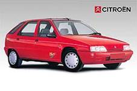
Opera House The Paris Opera House was built by Charles Garnier in 1875 and is world renowned for its brilliant architecture. "Garnier, Charles." Encyclopædia Britannica. 2004. Encyclopædia Britannica Online. 16 Sept. 2004 <http://search.eb.com/eb/article?tocId=9036104>, and www.greatbuildings.com (September 16, 2004)
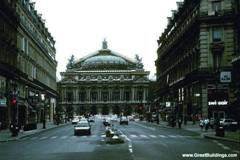
Place Vendome The Street on which the Paris Ritz is located. Langdon mentions driving on it on the way to the Louvre
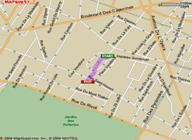
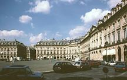
Map from www.mapquest.com . picture from www.bluffton.edu, September 26, 2004.
Curator See Chapter 1.
Poussin Nicholas Poussin was a17th century French painter (1594-1655) famous for introducing pagan elements into his work. Possibly his most famous painting is Les Bergers d, Arcadie housed in the Louvre, which portrays a Latin phrase ET IN ARCADIA EGO that mysteriously lacks a verb. The painting was for a long time thought to be of an imaginary tomb set in an imaginary landscape, however in the 1970’s an identical site was located in Arques, a small French village. The most intriguing part about this is that this location is only several miles from Rennes-le-Chateau a church known by many to be connected to grail lore. In The Da Vinci Code Langdon reflects upon Sauniere’s books, some of which alluded to secret codes hidden in Poussin’s paintings. (See also Chapter 61)
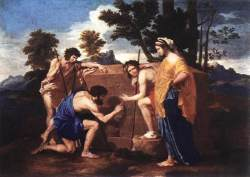
"Poussin, Nicolas." Encyclopædia
Britannica. 2004. Encyclopædia Britannica Online.
16 Sept. 2004 <http://search.eb.com/eb/article?tocId=5898>.
Baigent, M: Leigh, R; Lincoln,H. Holy Blood, Holy Grail. New York: Dell Publishing, 1982, pp, 44-6.
Teniers David Teniers the Elder was also a17th century painter (1610-1690). Unfortunately not too much is known of this Flemish man except for the prevalence of religious figures in his paintings. In The Da Vinci Code, Langdon also remembers Sauniere mentioning Teniers secret code filled paintings in one of his books. Although it is not mentioned whether it was Tenier the elder or younger, the elder’s reputation for emphasizing religion in his paintings makes it more likely that it is he rather than his son who is alluded to.
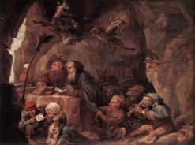
"Teniers, David, The Elder." Encyclopædia Britannica. 2004. Encyclopædia Britannica Online. 16 Sept. 2004 <http://search.eb.com/eb/article?tocId=9071685>.
http://www.wga.hu/frames-e.html?/html/t/teniers/
Amandes Almonds. In The Da Vinci Code, candied almonds are being sold on the streets of Paris (trans. By http://babelfish.altavista.com/tr October 31, 2004)
American University of Paris See chapter 2
Interpol: Interpol is a global police force renowned for its use of technology in crime fighting. Its prevalence spreads throughout Europe and from the perspective of a criminal it has become a force to be reckoned with. In The Da Vinci Code, the police that deal with Sauniere’s murder and chase Robert Langdon. www.interpol.int September 17, 2004
Ritz See Chapter 2
The Eiffel Tower Possibly the most famous structure in the world, this colossal Parisian tower was completed in 1889 to celebrate the French Revolution. It is 300 meters tall and weighs 7000 tons. Until 1930 this was the world’s largest structure. Today it is one of the most visited landmarks in the world. However what few people know is that since 1918 it has been used for French radio broadcasting and since 1957 it has been used for television broadcasting. This is also another landmark Langdon passes en route to the Louvre.
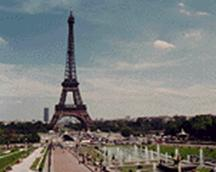
www.tour-eiffel.fr, September 17, 2004.
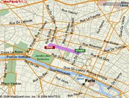
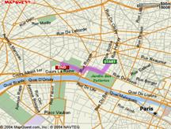
The map on the left is the route from the Louvre to the Ritz. The map on the right is the route from the Ritz to the Eiffel Tower. Notice that it is possible that Langdon passed the Eiffel tower on route to the Louvre., but unlikely.
(Maps courtesy of www.mapquest.com)
Machismo: [< Mexican Spanish machismo manliness (the pejorative
sense may have originated in Anglophone usage) < Spanish macho masculine
(see MACHO a.) +
-ismo -ISM. The pronunciation
with /-k-/ is in imitation of words of Greek origin with ch.
Attributive use has occas. been criticized in usage guides.] The quality of being macho; manliness,
male virility, or masculine pride; the display of this:” dictionary.oed.com/cgi/entry/00298903?single=1&query_type=word&queryword=machismo&edition=3e&first=1&max_to_show=10
Napoleon (1769-1821) Brown uses this 19th century French leader, Napoleon Bonapart, notorious for his ambition and military arrogance to describe the gait of Captain Bezu Fache.
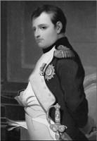
"Napoleon I." Encyclopædia
Britannica. 2004. Encyclopædia Britannica Online.
18 Sept. 2004 <http://search.eb.com/eb/article?tocId=9108752>.
Pepin the Short Pepin the Short was born in 714 to father Charles Mortel. In 1741, when Mortel died, Pepin inherited half of his father’s land, as well as the title Mayor of the Frankish Court. In 1751 Pepin was crowned king of France on behalf of a ploy implemented by the Vatican (Pope Stephen II) to form an ally close by. This marked the end of the reign of the Merovingian family’s reign as Pepin usurped Chiloteric. Pepin’s relationship with the Papacy continued to grow and on one occasion he intervened in Italy for Pope Zacharius earning the title of Partrician of Rome as well as his family’s consecration, therefore legitimizing his families right to the thrown. In The Da Vinci Code Robert Langdon remarks that it was typical of the French who are often characterized by insecure, aggressive leaders like Napoleon and Pepin the Short, to construct an enormous phallus as a symbol of their country,
“France, history of." Encyclopædia
Britannica. 2004. Encyclopædia Britannica Online.
25 Sept. 2004 <http://search.eb.com/eb/article?tocId=40284>.
Phallus An image of the male generative organ (Oxford English Dictionary) Langdon uses this term to characterize the Eiffel Tower on his trip from The Ritz to The Louvre.
Rue de Rivoli: This is the street on which the Louvre is located. Langdon mentions it on his trip from The Ritz to the Louvre. On the left of the picture is the Louvre and on the right is the Tuileries Gardens.
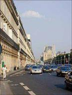
www.atkeileski.com (September 24, 2004)
Rue Castiglione: This is another street Langdon travels on en route to the Louvre. This is at the northern end of the Tuileries Gardens which can be clearly seen on this map where the red end symbol rests.
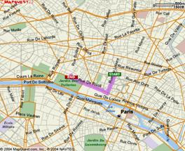
www.mapquest.com
Tuileries Gardens: The Tuileries Gardens border the Louvre on one side and the Seine River on the other. Designed by Le Notre in 1664 these gardens were built for Louis XIV. They remain one of the main destinations in Paris for tourists and residents alike. This place is mentioned in The Da Vinci Code as being bordered by the Louvre and accessible via Rue Castiglione. Dan Brown also claims that the name Tuileries is from the red tiles that used to be made form the garden’s clay. While these statements are true Brown commits a serious blunder by writing that Langdon drove through the Gardens. The Tuileries Gardens are completely off limits to motor vehicle traffic.
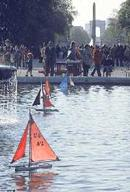
www. Parisdigest.com September 24, 2004
Arc du Carrousel Completed by Napoleon in 1808, this famous arc was constructed to resemble the Arc of Constantine in Rome. This landmark contains three arches the largest of which measures sixty-three feet high and seventy-five feet wide. The entire structure is composed of rose marble. The Carrousel is part of the Grand Axis of Paris which consists of the Grande Arche de la Defense, the Arc de Triumph de I’Etoile, the Obelisque du Luxor, the Tuileries Gardens, and the Louvre. In The Da Vinci Code, Langdon observes the Carrousel’s location at the end of the Tuileries Gardens and reflects upon the museums which surround it. Langdon’s car, however, would have never gone this route and certainly would never have driven in the gardens.
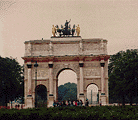
www.paris.org (September 26, 2004)
Seine This is the second longest river in France stretching 485 and is the river on which Paris was established. Seine River." Encyclopædia Britannica. 2004. Encyclopædia Britannica Online 26 Sept. 2004 <http://search.eb.com/eb/article?tocId=34462>. It is in the direct vicinity of the Louvre, the Tuileries Gardens, and the Arc du Carrousel.
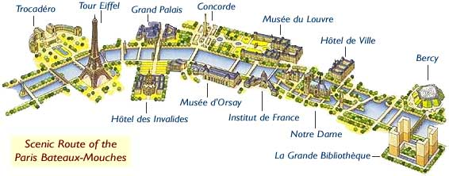
www.discoverparis.com (September 26, 2004)
Quai Voltaire The Quai Voltiare is the street Langdon mentions as being adjacent to the Seine River.
.
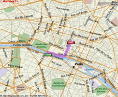
www.mapquest.com
Musee d’Orsay Once Gare d’ Orsay, the Orleans Railroad station built in 1898 by Victor Lalox to fit in with the Louvre and Arc du Carrousel, this building was converted in 1986 to a museum that specializes in the art of the second half of the nineteenth century. In The Da Vinci Code, Langdon says he can see this building over the Seine River on his way to the Louvre.
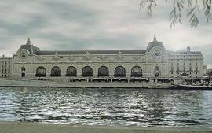
www.musee-orsay.fr (September 26, 2004)
Pompidou Center The Georges Pompidou National Art and Cultural Center, named for the French president was opened in 1977. Like the Eiffel Tower the Pompidou Center was initially criticized for its bold architecture. Now, the Pompidou is the
Museum of Modern Art and commands the attention of everyone in the city of Paris. www.bc.edu In The Da Vinci Code, Langdon claims to be able to see the top of the Pompidou on his trip to the Louvre.
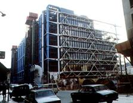
www.cnac-gp.fr (September 26, 2004)
Obelisk of Ramses The Obelisk of Ramses is one of the actual Obelisks that once stood outside the Luxor Temple in Egypt. In 1831 Jean Baptiste Apollinair Lebas took it down with the permission of Egyptian ruler Mohammed Ali, and loaded it onto the ship, fittingly named the Louxor. It now stands seventy-four feet high and weighing two hundred and twenty-seven tons in Paris at Place de Concord. (www.pbs.org) Langdon alludes to its location marking the Musee du Jeu de Paume.
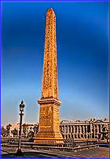
Musee du Jeu de Paume This Parisian museum began construction under the authorization of Napoleon III in 1851. It did not house exhibits until the turn of the century. In 1921 it became a museum solely housing impressionistic art. However in 1987, all of the Paume’s art was moved to the Musee de Orsay and it became a contemporary art museum which it remains to this day.
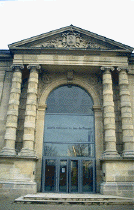
(www.hotel-paris.com September 29, 2004)
Louvre…3 miles, 65,300 pieces: Brown claims that The Louvre is over three miles long and that it contains over 65,300 pieces of art. See Chapter 2.
Mona Lisa. The Mona Lisa is has been in the Louvre since 1793. It was completed in 1506 by Leonardo Da Vinci. Painted in the sfumato style, which blends one object into another through shade, leaving it up to the eye to fill in the blanks, this is perhaps the world’s most famous piece of art. Many revere the Mona Lisa for the sense of harmony that is created by the subjects subtle smile and the peaceful landscape in the backdrop, to many the Mona Lisa is much more. Some believe that Da Vinci painted himself in the form of a woman in this painting. Many maintain that painting is of a woman named Mona Lisa who was the wife of Florentine government figure Francesco del Giocondo. The name of the painting is only Mona Lisa in English speaking countries. In France it is La Joconde, and in Spain it is La Giocand. In Da Vinci’s day it was known as A Courtesan in a Gauze Veil. The discrepancy in the name of the painting makes Brown’s use of the anagram code in the following chapters questionable at best.
. "Leonardo da Vinci." Encyclopædia
Britannica. 2004. Encyclopædia Britannica Online.
26 Sept. 2004 <http://search.eb.com/eb/article?tocId=59782>.
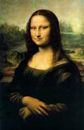
www.hepguru.com (visit this site to learn more about the conspiracy involving The Mona Lisa. September 29, 2004.)
Venus de Milo A peasant named Yorgos in a cave of Melos, an island of Turkey, found this ancient French statue in 1820. It was confiscated by the Turkish government which sold it to a French frigate on the way back to the mainland. It is a beautiful sculpture of a naked Venus whose arms were broken off, most likely during her journey across the Aegean Sea. She stands 2.02 meters tall, and it is believed she was carved in Antioch in 150 B.C.. When the sculpture was first brought back to France, Louis XVIII had arms built for, but later he decided that it would be foolish to alter the original beauty of the sculpture. Today it is housed in the Louvre. "Venus de Milo." Encyclopædia Britannica. 2004. Encyclopædia Britannica Online. 30 Sept. 2004 <http://search.eb.com/eb/article?tocId=9075057>. In The Da Vinci Code, Brown alludes to it as one of the most famous pieces of art work in the Louvre.
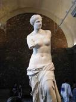
www.eleganza.com (September 30, 2004)
Winged Victory This statue was found in 1875 by archeologist Charles
Champoiseau in Olympia. It is thought to have been carved by Paeonius of
Thrace in 420 B.C. The true name of the sculpture is Nike, and she appropriately
bears an inscription on her pedestal congratulating the Messenians and the
Naupactians for a victory over their enemies. "Paeonius." Encyclopædia
Britannica. 2004. Encyclopædia Britannica Online.
30 Sept. 2004 <http://search.eb.com/eb/article?tocId=9057965>
.
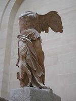
www.wingedvictory.com (September 30,2004)
Art Buchwald According to the novel, Buchwald claims that he saw the Mona Lisa, Winged Victory, and Venus de Milo in five minutes and fifty-six seconds. Art Buchwald was born in 1928. He has worked as an author, a humorist, and a newspaper columnist, for many publications including the L.A. Times Syndicate, The Washington Post, and The Paris Herald Tribune. He served as a U.S. Marine from 1942 to 1945, and attended USC from 1945 to 1948. His work has earned him many honors including a Pulitzer Prize in 1982. “Buchwald, Art." Britannica Student Encyclopedia. 2004. Encyclopædia Britannica Online. 3 Oct. 2004 <http://search.eb.com/ebi/article?tocId=9318213>.
I.M. Pei. The Chinese born American responsible for building the glass pyramid outside the Louvre. Ieoh Ming Pei was born in 1917 in China. In 1935 he came to America to study at The University of Pennsylvania. However, he transferred to the Massachusetts Institute of Technology, which he graduated from with a degree in architectural engineering in 1939. He taught at Harvard from 1945 to 1948. In 1955 he began his own firm, I.M. Pei and associates. This firm is responsible for building among others, the multi airline terminal at JFK airport (NY), the JFK Library at Harvard University, the East Building of the National Gallery of Art in Washington D.C., The John Hancock Tower in Boston, Massachusetts, the West Wing of The Museum of Fine Arts in Boston, and of course la Pyramide outside the Louvre in Paris, France.
"Pei, I M." Encyclopædia Britannica.
2004. Encyclopædia Britannica Online.
3 Oct. 2004 <http://search.eb.com/eb/article?tocId=9058960>.
La Pyramide The controversial structure outside the Louvre built by American I.M. Pei in 1982 out of glass, steel and cables supporting its weight. It stands 21.65 meters (71 feet) tall. Commissioned by French President Mitterand, this project was initially very controversial. The modern architecture was seen by many as a smear on the beautiful face of the Louvre. Now however it is seen by many as a tactful fusion between ancient and modern architecture. www.greatbuildings.com
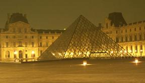
www.pele.org (October 3, 2004)
Goethe Johann Wolfgang von Goethe was born un 1749 to Johann Caspar Goethe and Katherine Elisabeth Textor. He displayed intellectual promise early on and studied law at Leipzig University at the age of sixteen. Goethe went on to serve the German court of Duke Karl August where he practiced law and held several official positions. Goethe was also a poet, novelist, playwright, philosopher, statesmen, and teacher. Possibly his greatest work was Faust, a play he finished directly before his death in 1832. Today Goethe is remembered as one of the last men during the renaissance to endeavor to study in as many areas as possible. He wrote anything from fairytales to poetry. His works on science alone are contained in fourteen volumes.
"Goethe, Johann Wolfgang von." Encyclopædia Britannica. 2004. Encyclopædia Britannica Online. 30 Oct. 2004 <http://search.eb.com/eb/article?tocId=9108453>.
Mitterand Francois Mitterand was born in 1916. He fought for France in WWII where he became a prisoner of war after France’s fall. On his third attempt Mitterand succeeded in escaping the grip of the Nazi’s only to briefly work under Marshal Petain’s pro-nazi government. However he soon joined the resistance movement in France where he gained political stature. When the war was over he joined France’s new government as a minister. In 1981 with the assistance of France’s communist party, socialist Mitterand was elected president. As president Mitterand did much to reunite France and Europe. He was one of the main proprietors of the European Union, and helped forge a healthy relationship with Germany. He also commissioned large projects to restore France. The most famous of these was the construction of la Pyramide outside the Louvre. Mitterand lost the presidency in 1995 and died one year later, in 1996, of prostate cancer. He is often referred to as the “sphinx” due to his infatuation with Egyptian architecture. www.cnn.com/world/9601/mitterand (October 3, 2004).
Bezu Fache This is the name of the captain of the DCPJ in The Da Vinci Code. Interestingly enough Fache means anger in French and Bezu was the name of a peak visible from Rennes Le Chateau the church in which Berenger Sauniere supposedly found a powerful secret relating to the Priory of Sion.
(Baigent, Michael; Leigh, Richard; Lincoln, Henry, Holy Blood, Holy Grail.)
Zodiac iconology Langdon uses his knowledge of zodiac iconology to translate the word Taurus or “bull.” Zodiac iconology is the study of the twelve astrological signs. The signs were originally derived from the constellation through which the sun passes through. Although the sun does not pass through the same areas at the same time of the year anymore, the signs are still used today to represent the twelve sections of the year. Taurus is the second symbol of the zodiac from April 20th to May 20th and is considered the “governing” part of the year."Taurus." Encyclopædia Britannica. 2004. Encyclopædia Britannica Online. 31 Oct. 2004 <http://search.eb.com/eb/article?tocId=9071413>.
Salvador Dali One of the most famous surrealist painters of all time. Born in 1904 in Spain. He studied art in Madrid and Barcelona, but it was not until he was influenced by Sigmund Freud’s writings on the significance of subconscious freed that he invented the painting style that would make him famous. He called it “paranoic critical” and used this style only after he had induced a hallucinogenic state of mind. In the years that followed (1929-1937) Dali produced the work that would put his name is history. Among these works was The Persistance Memory (1931)which is probably Dali’s most famous work.
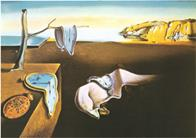
In the 1930’s, however, the influence of renaissance painter Raphael transformed Dali’s style. He began to design theatre sets, the interiors of shops, and jewelry. Dali never again painted surrealist art, but from 1950-1970 he painted religious scenes including The Sacrament of the Last Supper in1955. Dali continued to paint in the genre until his death in 1989.
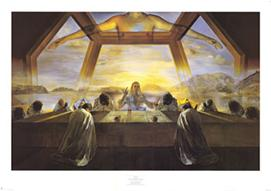
Langdon feels as if he is trapped inside a Dali painting, clearly alluding to the esoteric, surreal nature of Dali’s earlier works.
"Dalí, Salvador." Encyclopædia
Britannica. 2004. Encyclopædia Britannica Online.
19 Oct. 2004 <http://search.eb.com/eb/article?tocId=9028592>.
Pictures from www.allposters.com (October 31, 2004)
Egyptologists Scholars who study the culture, art, architecture, and lifestyles of ancient Egyptians.
Neanderthal Designating, relating to, or characteristic of a Middle Paleolithic Fossil hominid with a receding forehead and prominent brow ridges. www.oed.com (October 3, 2004) In the novel this term describes the physical attributes of Bezu Fache.